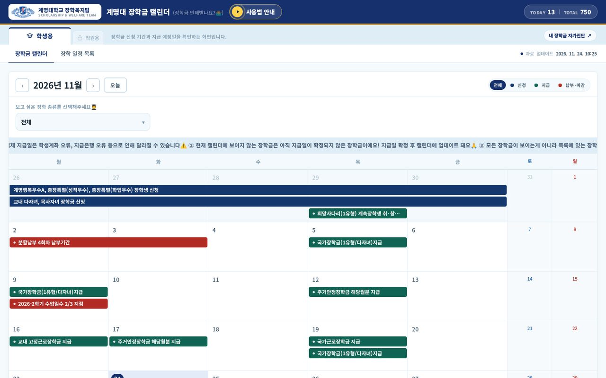
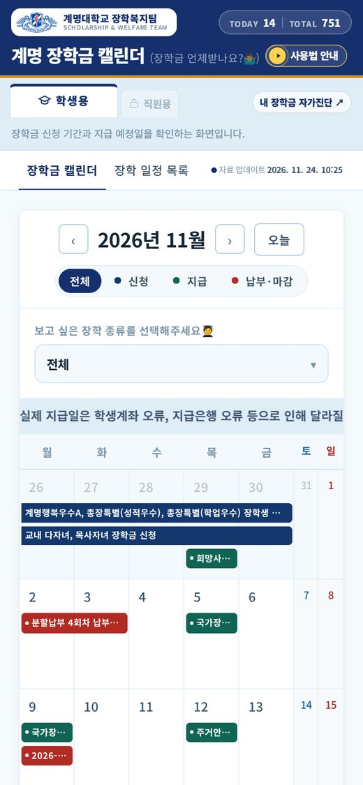
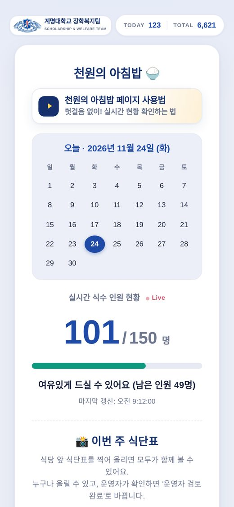

KMU
AHEAD 2027 · 참가 연구계획
계명대학교 장학복지팀 추윤호
태평양 상공
1
내 장학금 자가진단
kmu-scholarship.pages.dev
2
계명대 장학금 캘린더
k-link.pages.dev


3
천원의 아침밥 실시간 현황
kmu-scholarship.pages.dev/breakfast

‹
1 / 13
›
마우스 휠 ·
→
←
키 · 아래 일정을 눌러 이동
이 페이지는 JavaScript가 필요합니다.